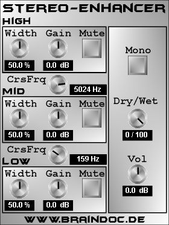

|  |
Was ist Stereo-Enhancer?:
Stereo-Enhancer ist ein VST-PlugIn für die PC-Plattform zur Modifizierung der Stereo-Basisbreite eines Signals. Die Basisbreitenänderung kann für tiefe, mittlere und hohe Frequenzen getrennt eingestellt werden. Für die Trennung der verschiedenen Frequenzbereiche kommen linearphasige FIR-Filter zum Einsatz, unter Anderem, um zu gewährleisten, dass die Summe der (noch nicht bearbeiteten) gefilterten Signale wieder exakt das Originalsignal rekonstruiert. Aus der Verwendung der FIR-Technologie resultiert eine relativ hohe CPU-Belastung, da hier eine Faltung implementiert werden muss - sorry dafür. Die Basisbreitenregelung selber basiert auf der Verstärkung/Absenkung von Differenzen der beiden Kanäle gegenüber der Mono-Summe (also der Summe aus linkem und rechtem Kanal). Dies bedeutet auch, dass das PlugIn nicht zur Erzeugung von Pseudo-Stereo Signalen aus Mono-Signalen verwendet werden kann, da diese Differenz bei Mono-Signalen Null ist. Es ist eben ein Stereo-Enhancer und kein Stereo-Creator.
allgemeine Parameter:
Auf der rechten Seite des PlugIn-Fensters befinden sich die allgemeinen Parameter des PlugIns, die da wären:
Parameter für die einzelnen Frequenzbänder:
Das Signal wird - wie gesagt - vor der Basisbreitenregelung in drei Frequenzbereiche aufgeteilt. Die Übergangsfrequenzen werden mit den beiden CrsFrq-Reglern eingestellt. Pro Frequenzband gibt es dann die folgenden Parameter:
Viel Spaß beim Mucke machen wünscht Braindoc.